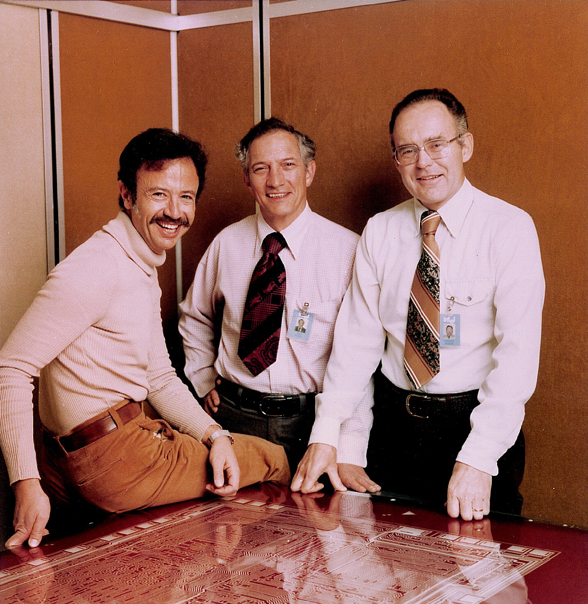
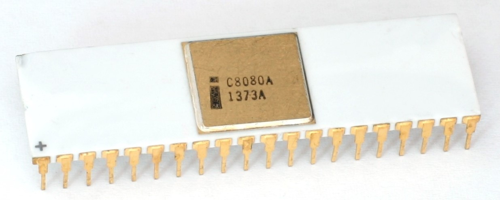
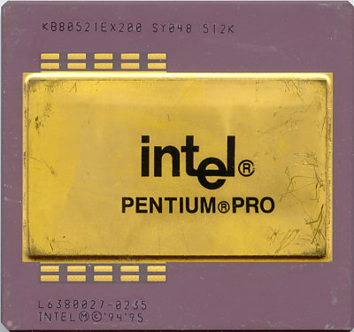
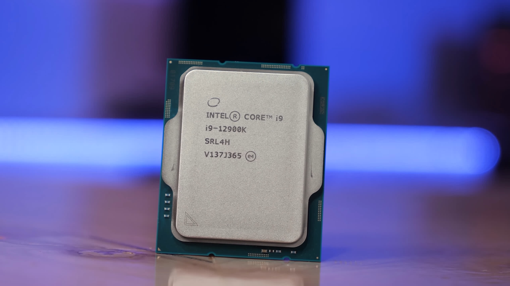
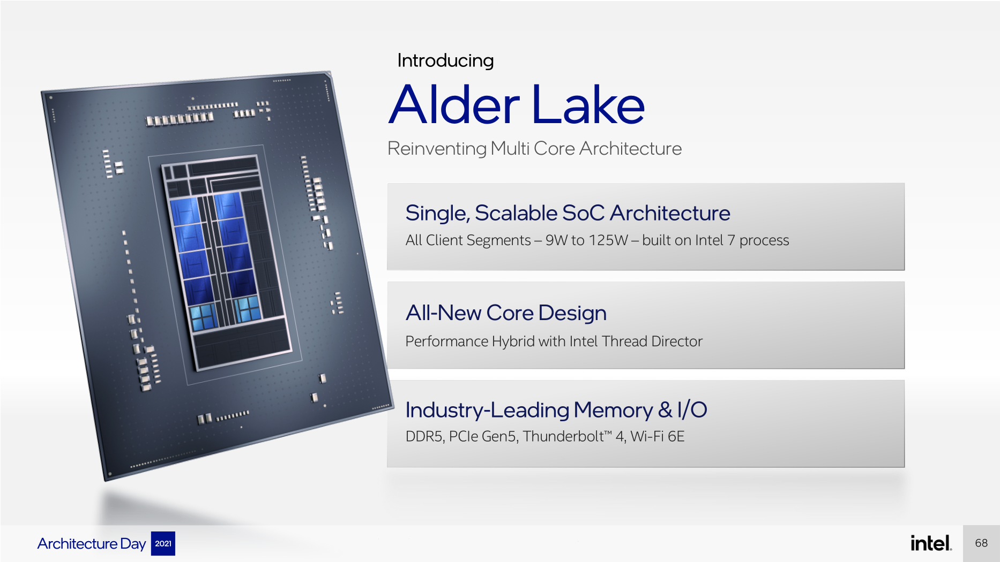
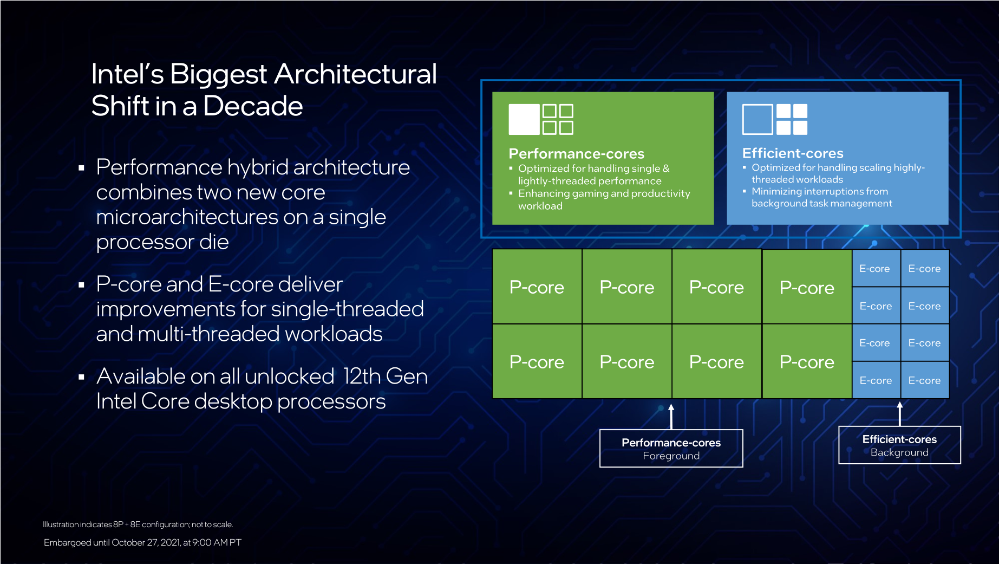
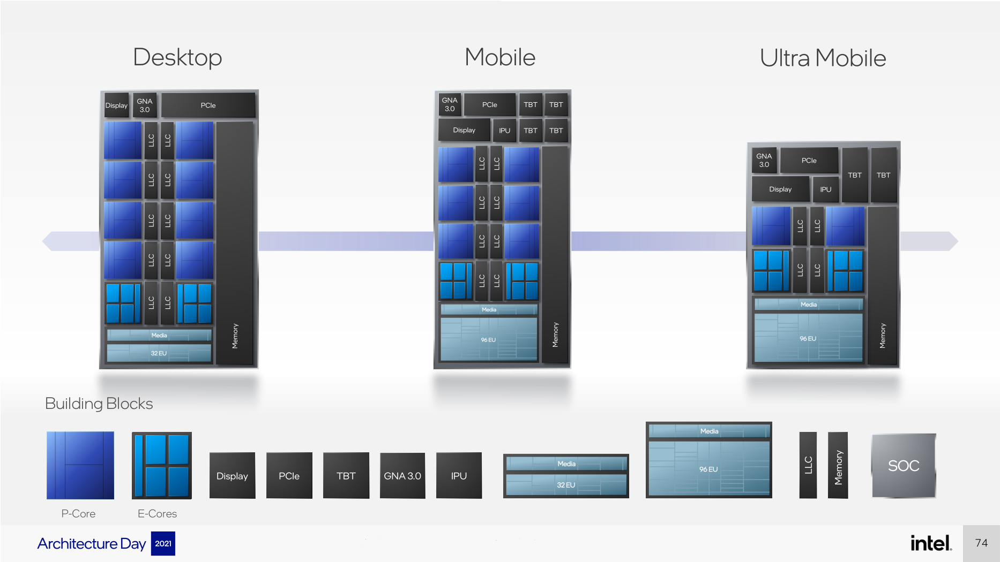
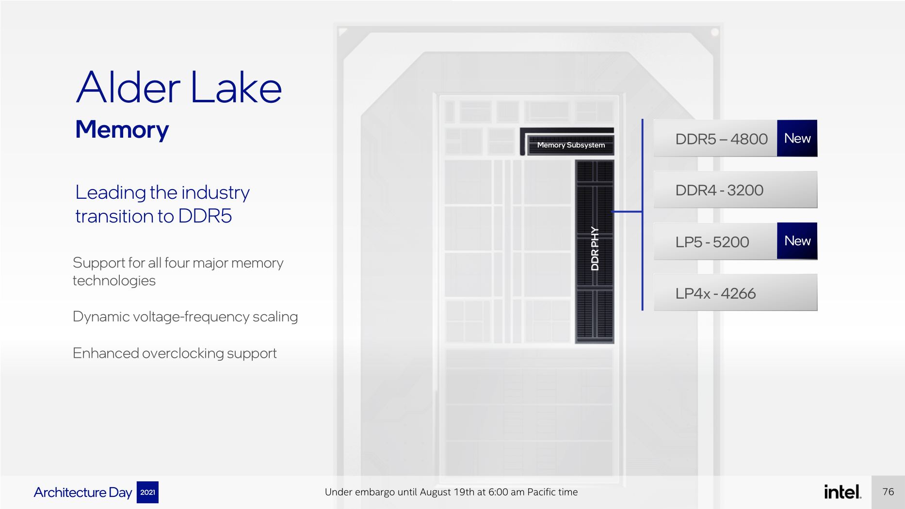
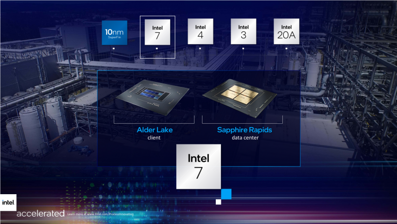

Роберт Нойс и Гордон Мур были в числе 8 соучредителей Fairchild Semiconductor. В этой компании они разработали интегральную схему и решили основать собственную. 18 июля 1968 года она была зарегистрирована под названием NM Electronics, но вскоре переименована в Intel (сокращение от Integrated Electronics). Вскоре к ним присоединился Энди Гроув, ещё один сотрудник Fairchild. Бизнес-план компании, распечатанный Робертом Нойсом на печатной машинке, занимал одну страницу. Представив его венчурному финансисту, ранее помогавшему создать Fairchild, Intel получила стартовый кредит в 2,5 млн $.

В 1974 году был представлен первый по-настоящему универсальный микропроцессор Intel 8080; при цене 360 $ он мог заменить ЭВМ, стоившие несколько тысяч долларов. Уже в 1980 году IBM избрала процессоры Intel 8088 для своего первого персонального компьютера. В 1983 году оборот компании впервые достиг миллиарда долларов, к этому времени число сотрудников превысило 15 тысяч. В 1985 году началось продвижение на рынок процессора 80386, который позволял обрабатывать несколько программ одновременно, имел 32-битную архитектуру и вмещал 275 тысяч транзисторов. Следующая модель, 80486, представленная в 1989 году, вмещала 1,2 млн транзисторов и имела встроенный математический сопроцессор.

В 1993 году был представлен процессор пятого поколения Pentium с 3,1 млн транзисторов и быстродействием более 100 млн операций в секунду. С началом продаж в 1995 году процессора Pentium Pro оборот в следующем году превысил $20 млрд. В 1999 году Intel была включена в Промышленный индекс Доу Джонса. В 2000 году на рынок были выпущены процессоры Pentium III с частотой 1 ГГц и Itanium, первый 64-разрядный процессор компании. К этому времени во всех компьютерах, за исключением Apple, были процессоры Intel или совместимые с ними процессоры производства AMD. Ранее Apple использовала процессоры Motorola, но в 2005 году объявила о переходе на Intel.

| Компания | Сумма сделки | Год сделки | Специализация компании |
|---|---|---|---|
| McAfee | $7,68 млрд | 2010 | Компьютерная безопасность |
| Altera | $16,7 млрд | 2015 | Разработка ПЛИС (Программируемая логическая интегральная схема) |
| Nervana Systems | $350 млн | 2016 | Разработка нейрочипов для систем искусственного интеллекта с глубоким обучением |
| Mobileye | $14,9 млрд | 2017 | Разработки в области машинного зрения и самоуправляемых автомобилей |
| Habana Labs | $2 млрд | 2019 | Разработка нейрочипов для ускорения машинного обучения в системах искусственного интеллекта |
| Tower Semiconductor | $5,4 млрд | 2022 | Производство чипов |
Процессор, который изменит всё, – примерно так можно охарактеризовать энтузиазм Intel, которым сопровождался выход Alder Lake. Ещё два с половиной года тому назад об Alder Lake говорили в том ключе, что это наиболее значимый шаг Intel со времён появления процессоров Core в 2006 году. И с этим трудно не согласиться. В Alder Lake Intel не только серьёзно обновила внутреннее устройство (микроархитектуру) процессора, добавила поддержку принципиально новых типов памяти и внешних интерфейсов, но ещё и реализовала иной концепт многопоточных вычислений, прибегать к которому в массовых настольных процессорах пока ещё никто не пытался.
Работа над Alder Lake стартовала примерно тогда, когда AMD начала добиваться первых заметных успехов со своими продуктами семейства Zen, и поэтому его можно считать ответом Intel на изменившиеся правила игры на процессорном рынке. То есть все предшествующие линейки, которые выпускала Intel в противовес сменяющим друг друга поколениям Ryzen, скорее были движением по инерции. Но то, что выход Alder Lake должен ознаменовать новый этап процессорной гонки, где лидерство AMD будет нарушено, – лишь одна из причин, по которым к новинке Intel приковано столько внимания. Вторая же причина состоит в том, что, вне зависимости от того, окажется ли Alder Lake лучше Zen 3 или нет, это всё равно революция, ведь таких масштабных обновлений мы не видели уже очень давно. В Alder Lake значительно увеличено число вычислительных ядер, наконец-то внедрён свежий техпроцесс и применена гибридная архитектура, объединяющая два разнородных типа ядер.
Начнём с самого интересного: гибридное строение. Речь идёт о том, что Alder Lake будут основываться на ядрах двух типов одновременно – производительных (P-ядрах) и эффективных (E-ядрах). Их объединение в одном вычислительном устройстве, по задумке разработчиков, должно позволить добиться недостижимой ранее гибкости как в смысле сферы применимости таких процессоров, так и с точки зрения соотношения производительности и энергоэффективности. Гибридный подход big.LITTLE уже давно используется в мобильных процессорах, и идея Intel, воплощённая в Alder Lake, чем-то напоминает эту схему. По задумке Intel, большие производительные ядра следует бросать на решение высокоприоритетных задач переднего плана, требующих короткого времени реакции, в то время как маленькие и энергоэффективные ядра могут заняться фоновыми процессами. Кроме того, все типы ядер можно объединить для решения одной задачи, что позволит достичь максимального уровня быстродействия, по крайней мере в теории.
Важной задачей, которую Intel ставила перед собой при разработке Alder Lake, было создание не только двух типов ядер, но и более широкого набора разнообразных конструкционных блоков, которые могли бы позволить легко собирать различные по назначению потребительские процессоры для разных рыночных сегментов и с различными характеристиками: как высокопроизводительные настольные, так и мобильные и даже ультрамобильные.
Кроме того использован новый контроллер памяти с поддержкой сразу четырёх типов оперативной памяти. Он может работать как с новыми DDR5и LPDDR5, так и со старой памятью DDR4и LPDDR4X. Естественно, все четыре типа памяти будут поддерживаться не одновременно: выбор того или иного варианта будет происходить на этапе проектирования конкретной платформы. Логично ожидать, что поддержка DDR5 в первую очередь появится в высокопроизводительных десктопах, в то время как решения среднего уровня продолжат опираться на привычную DDR4- и LPDDR4X-память. И так будет продолжаться до тех пор, пока цена модулей DDR5 будет существенно превышать стоимость DDR4.
Ещё одно большое нововведение касается технологического процесса производства. Alder Lake станут первыми чипами Intel, которые будут выпускаться по техпроцессу Intel 7 – до недавнего переименования он фигурировал под названием 10 нм Enhanced SuperFin. Речь здесь идёт о втором этапе оптимизаций процесса с 10-нм нормами, который должен обеспечить улучшение удельной производительности на ватт на 10-15 % относительно прошлой версии техпроцесса 10 нм SuperFin. Хотя ранее техпроцесс Intel 7 считался 10-нм, по плотности размещения транзисторов на кристалле он либо сравним, либо превосходит 7-нм техпроцесс других производителей, что как раз и дало производителю моральное право переименовать технологию в Intel 7: бывший 10-нм техпроцесс Intel обеспечивает размещение 100,76 млн транзисторов на мм2, в то время как 7-нм процесс TSMC упаковывает на той же площади только 91,2 млн транзисторов.
Пользуясь данной производственной технологией, Intel собирается упаковывать в полупроводниковые кристаллы Alder Lake до восьми производительных и восьми эффективных ядер одновременно. Это значит, что максимальное число ядер в будущих процессорах достигает 16, но такие конфигурации будут предлагаться только для настольных платформ.
| Номер | Кол-во ядер | Кол-во потоков | Кеш L3 | Частота | TDP | Цена |
|---|---|---|---|---|---|---|
| i9-12900 | 16 (8P+8E) | 24 | 30MB | 5.0 | 65-202 | 489$ |
| i7-12700 | 12 (8P+4E) | 20 | 25MB | 4.8 | 65-180 | 339$ |
| i5-12600 | 6 (6P+0E) | 12 | 18MB | 4.6 | 65-117 | 223$ |
| i5-12400 | 6 (6P+0E) | 12 | 18MB | 4.4 | 65-117 | 192$ |
| i3-12300 | 4 (4P+0E) | 8 | 12MB | 4.4 | 60-89 | 143$ |
| i3-12100 | 4 (4P+0E) | 8 | 12MB | 4.3 | 60-89 | 122$ |
Intel удалось совершить настоящую революцию на процессорном рынке. Совершенно очевидно, что в ближайшее время на рынке процессоров для настольных систем начнут происходить серьёзные перемены. AMD придётся агрессивно снижать цены на свои предложения, а Intel должна будет постараться удовлетворить спрос на процессоры Alder Lake, который наверняка окажется немалым.